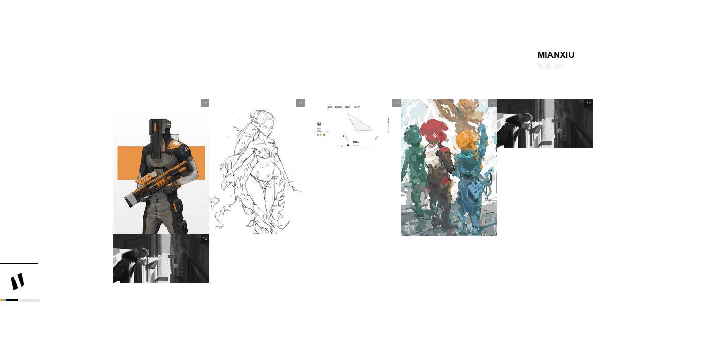

要做个画廊页面
一开始在瀑布流、网格流之间摇摆不定。看了几个主流的设计类、CG类网站，突然找到TJ大神的摄影站 tjholowaychuk ,就决定是瀑布流了。看了下网站的CSS，发现是用column-count来布局。一边写一边查看 column-count | MDN
效果可以，但如果图片质量不高，并且量大的时候，观感大副下降。
Artstation的网格流中规中矩。不过对于我po的图来说，很合适。把预览图改为background-image，每个方格用width:calc( 100% / grid-num )。但有却一个问题,格子的宽高无法相等？google了下,和又看了下A站的CSS，发现竟然用伪元素::before的margin-top:100%来撑开。😂
.gallery-link{
width: calc(100% / 5);
display:inline-block;
position: relative;
animation: gallery-overlay 0.4s;
overflow: hidden;
background-position: center;
background-clip: content-box;
background-repeat: no-repeat;
overflow: hidden;
background-size: cover;
}
.gallery-link::before{
content: '';
display: block;
margin-top: 100%;
}
至此问题解决。